Assignment 8: Final project
Concept
I created a decorative wall-mounted moose head sculpture with an embedded LED light using various techniques learned over the course of the class. Based on the initial sketches from the previous assignment, I created a digital representation using various modeling tools.
Execution
For the initial design, I traced a profile of a moose head found online from the Dreamstime.com stock graphics site, located here, in Adobe Illustrator. This allowed me to scale the shape of the moose head later as a vector image.
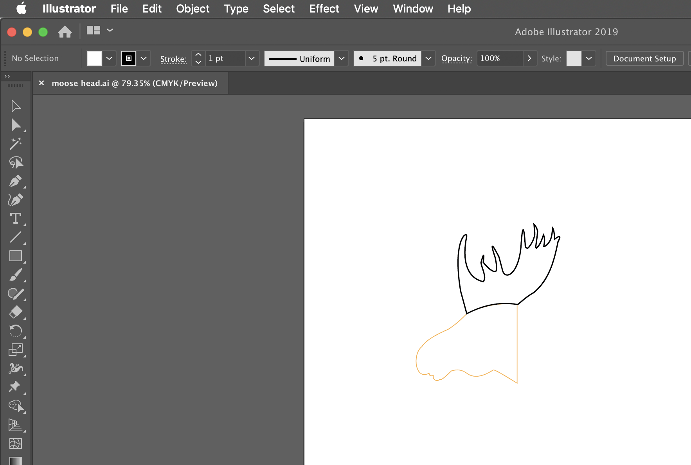
CAD using OnShape
Using the moose vector as a template, a frame for holding the various pieces of this sculpture was created in OnShape. The basic shape of the light that will go into the sculpture was also roughly modeled in OnShape so that I can easily model the inserts taking into account for the light.
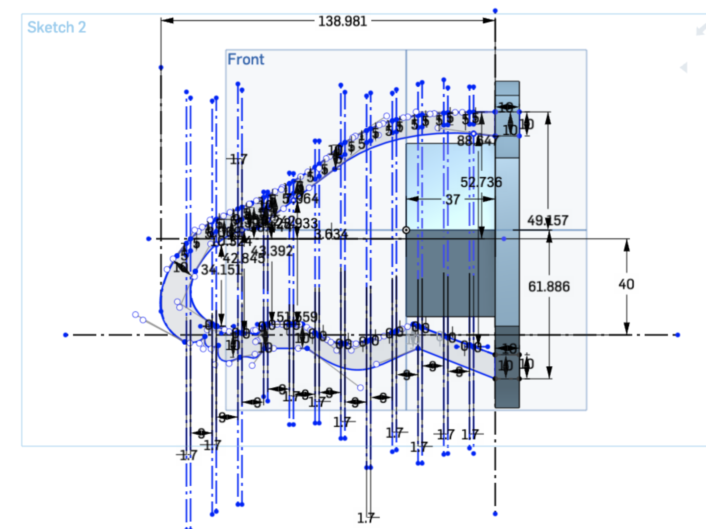
I created a mounting board that the frame will be attached to. A dowel joint was used to join the frame to the mounting board securely as shown below.
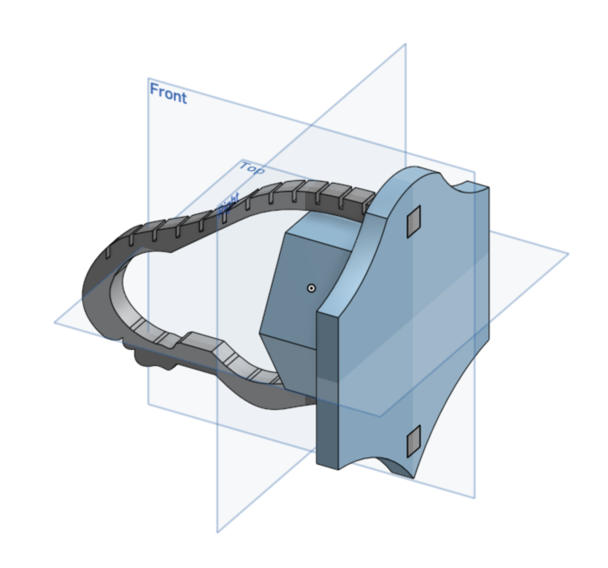
Slots were cut into the frame to securely hold the other pieces that will be attached to the frame later. The inserts will create depth for the sculpture. Since I planned on using 1.6 mm thick Delrin plastic inserts, the slots in the frame were had a width of 1.7 mm so that they are slightly bigger than the Delrin inserts. This ensured that the inserts will fit easily into the slot but are yet held in place by friction.
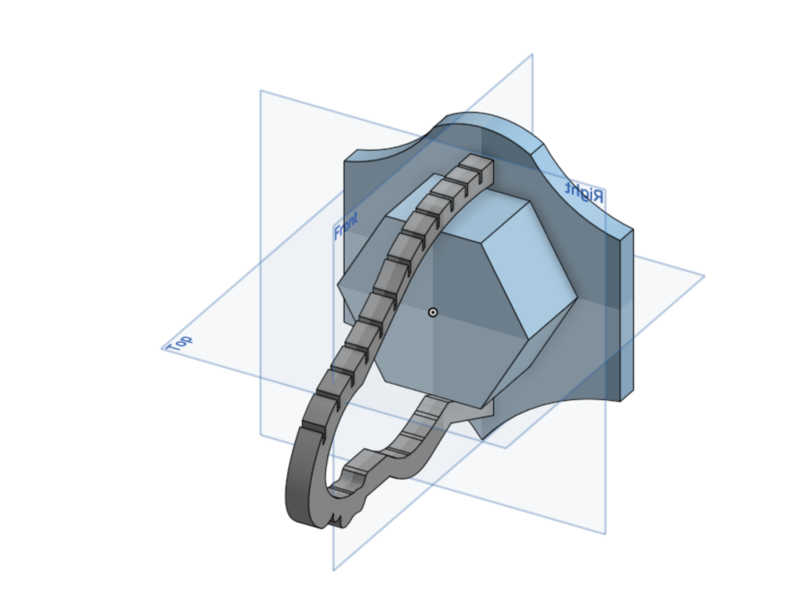
Parametric modeling using Grasshopper
I used Rhino3D and Grasshopper to quickly create the pieces that will form the snout and head of the moose. I wanted the inserts near the anterior of the sculpture to be smaller than the inserts at the posterior with a gradual size increase for the inserts in between. Grasshopper was used to create an oblong circular shape. I added numeric sliders to adjust the width and height of the inserts. As I had to create 7 of these shapes of various width and height, doing this parametrically sped up the modeling effort.
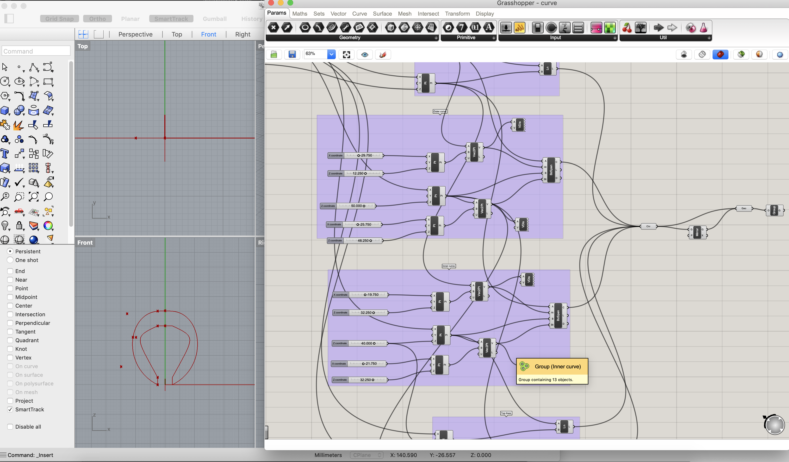
The complete Grasshopper script is shown below.
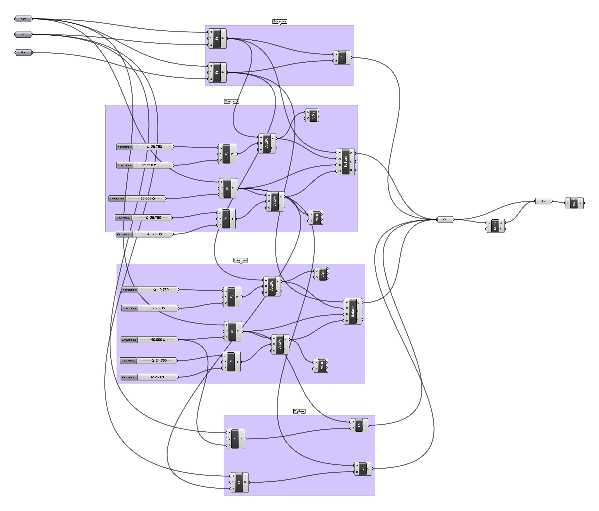
These pieces were then exported into Adobe Illustrator for laser cutting.
3D printing
The frame and mounting board from OnShape were exported into Cura for slicing and processing. These pieces were 3D printed as they form the superstructure for the sculpture and, as such, needed the extra depth for strength and stability.
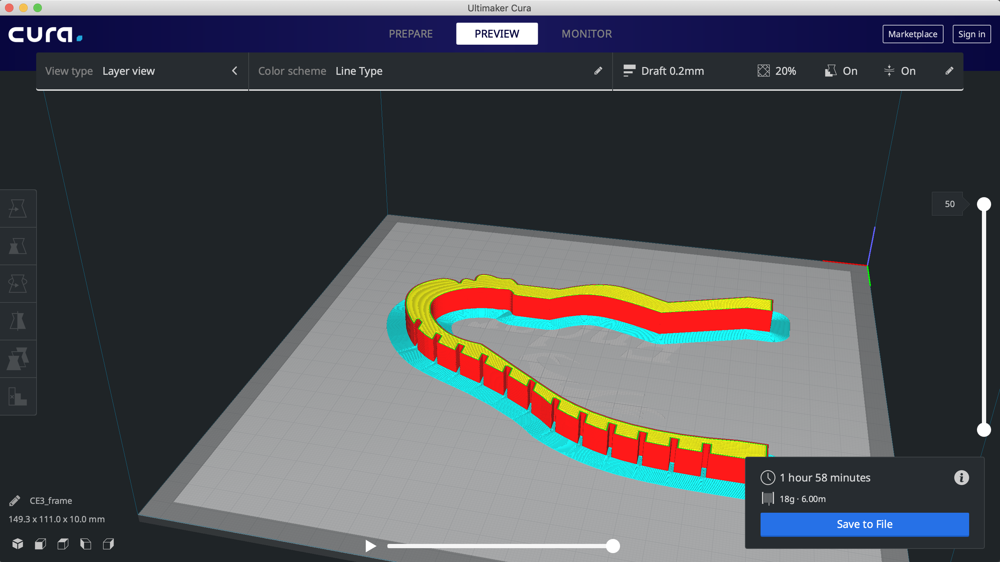
Afterward, the pieces were fitted together as shown below.
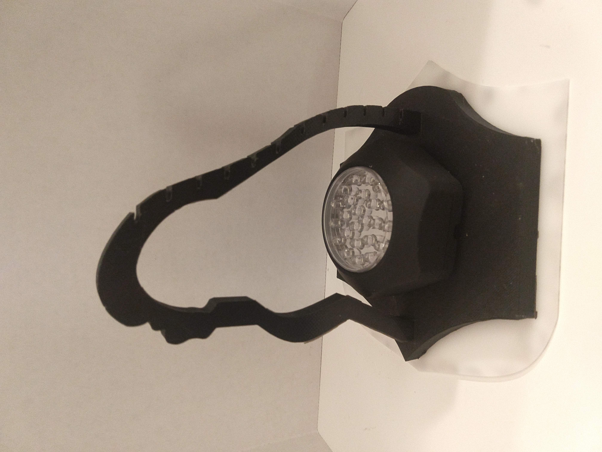
Laser cutting
The pieces generated from Rhino3D and Grasshopper were exported into Adobe Illustrator. For efficiency while at the laser cutter, all the pieces were laid out in a single document. The inserts' line width was changed to 0.001 mm so that the laser cutter sees them as vector lines.
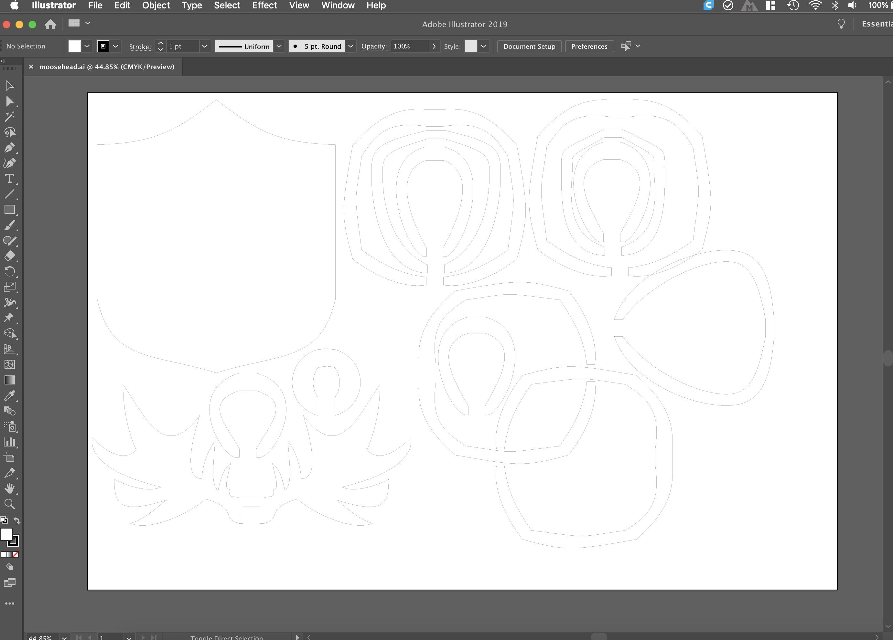
To rapidly and cheaply prototype the inserts to see if they will fit on the frame, I initially cut the inserts out of cardboard.
The inserts were test fitted into the slots on the frame. The slots were held loosely by friction between the 3D printed frame and the cardboard cutouts.
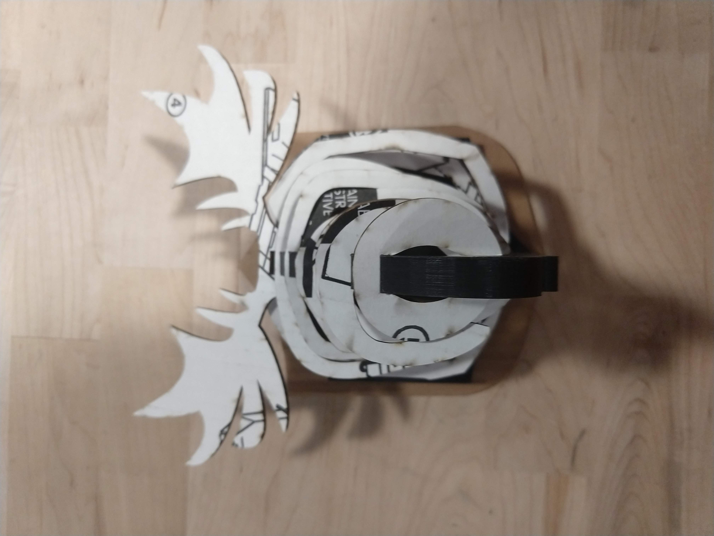
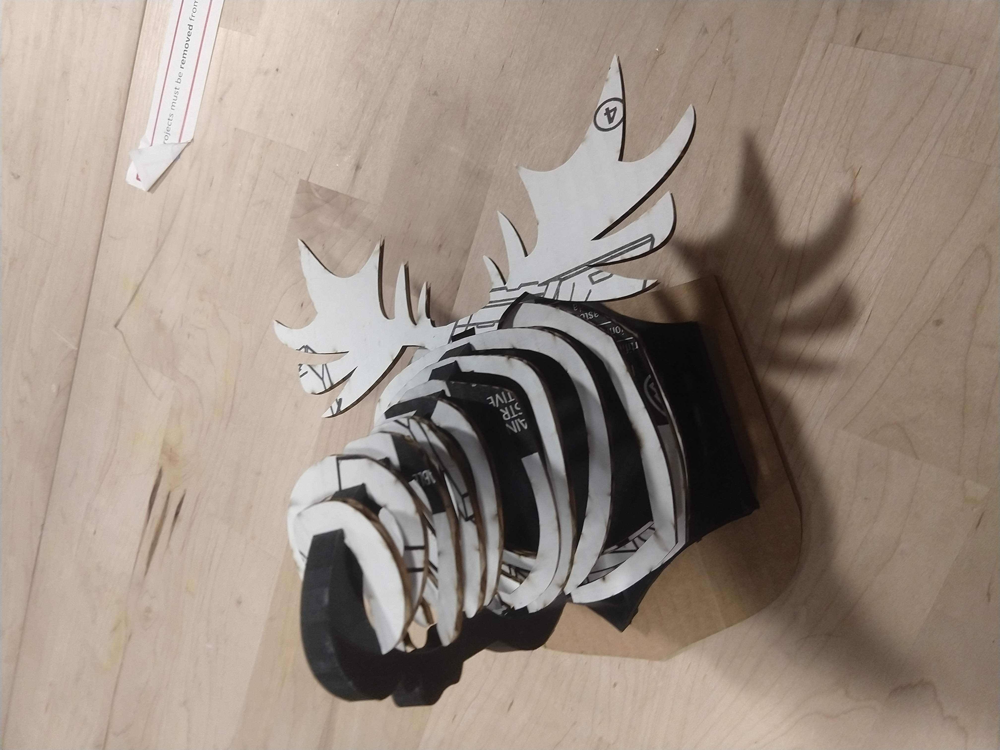
Afterward, the inserts were cut out of Delrin for the final product.
Assembly
The Delrin inserts were arranged and inserted into the slots in the frame. The allowance in the slots was tight and held the inserts in place with a combination of friction and tension.
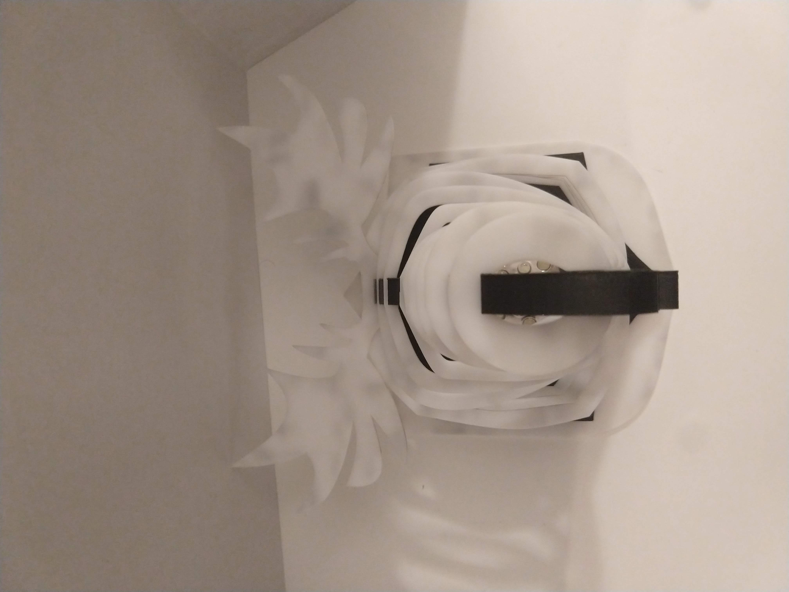
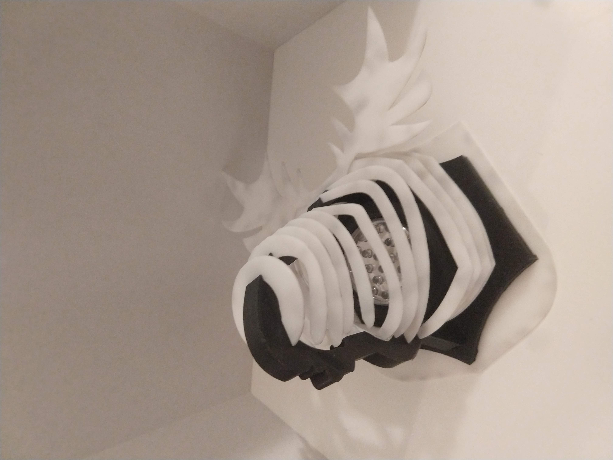
Here is the final product when the LED light that’s embedded inside is lit up.

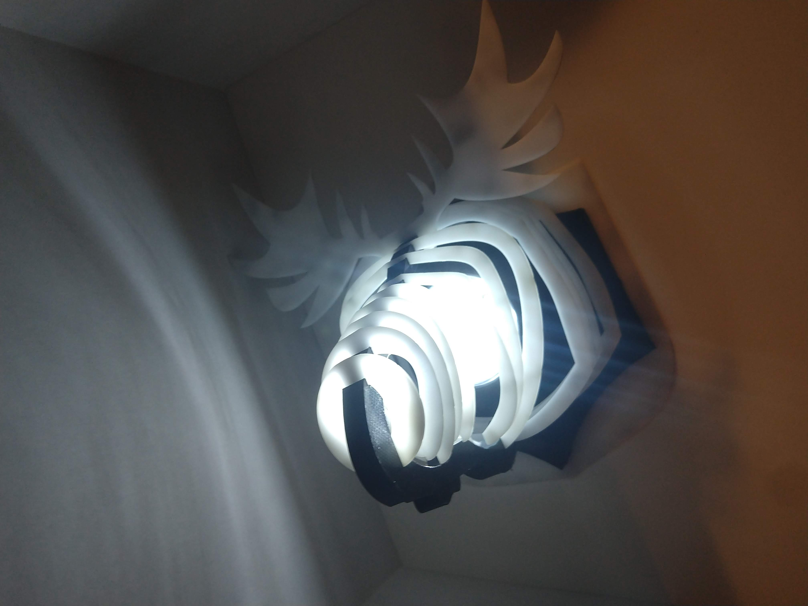
Source files
OnShape model for frame and mounting board: here
- Grasshopper source: A8-curve.gh
- Rhino3D model: A8-curve.3dm
-
Laser cut files:
- Combined cutouts: A8-cutouts.ai
- Antlers: A8-Antlers.dxf
- Backplate: A8-Backplate.dxf
- Insert 1: A8-Piece1.dxf
- Insert 2: A8-Piece2.dxf
- Insert 3: A8-Piece3.dxf
- Insert 4: A8-Piece4.dxf
- Insert 5: A8-Piece5.dxf
- Insert 6: A8-Piece6.dxf
- Insert 7: A8-Piece7.dxf
- Insert 8: A8-Piece8.dxf
- Insert 9: A8-Piece9.dxf
-
Epilog Fusion M2 laser cutter settings:
- Cardboard at 1.9 mm thickness: 50% speed/75% power/50% freq
- Delrin at 1.6 mm thickness: 7% speed/100% power/50% freq
-
Frame:
- STL: A8-Frame.stl
- Gcode: A8-Frame.gcode
-
Mounting board:
- STL: A8-MountingBoard.stl
- Gcode: A8-MountingBoard.gcode
-
Slicer settings:
- Layer height: 0.2 mm
- Use Skirt/Brim: checked
- Infill: 20%
Bill of Materials
| Quantity | Item | Cost |
|---|---|---|
| 1 | Delrin plastic sheet | $8 |
| 1 | spindle PLA filament | $10 |
| 1 | Large cardboard (for initial fitting prototyping) | $5 |
| 1 | LED light | $5 |
Thanks!
Thanks to this forum post on how to create bezier curves in Grasshopper.
References
Kotozhekova, E. Vector black silhouette moose with horns. Retrieved from https://www.dreamstime.com/vector-illustration-black-silhouette-elk-isolated-white-background-icon-moose-horns-side-view-profile-vector-black-image102075345.
Stasiuk, D. (19 November 2013). Bezier curve in grasshopper. Retrieved from https://www.grasshopper3d.com/forum/topics/bezier-curve-in-grasshopper.